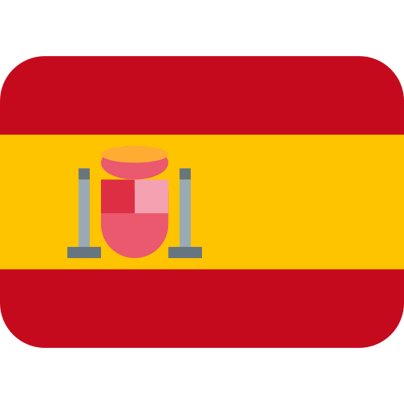
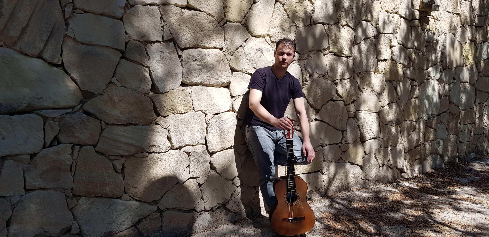
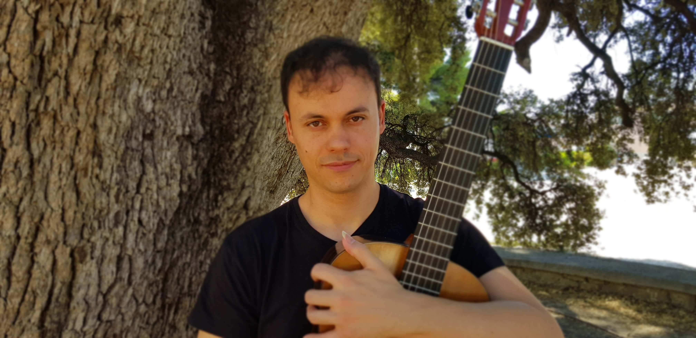
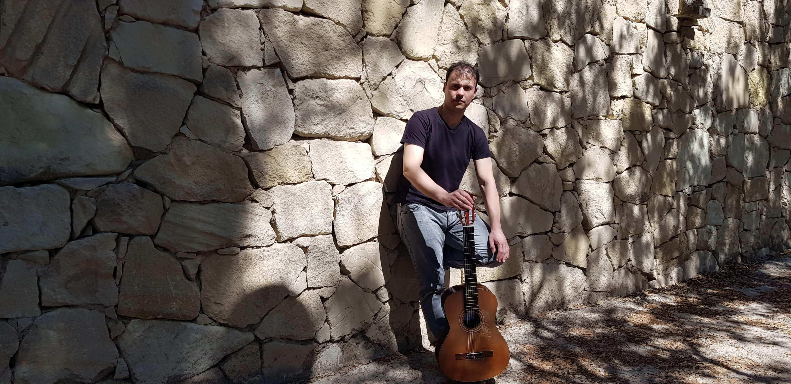
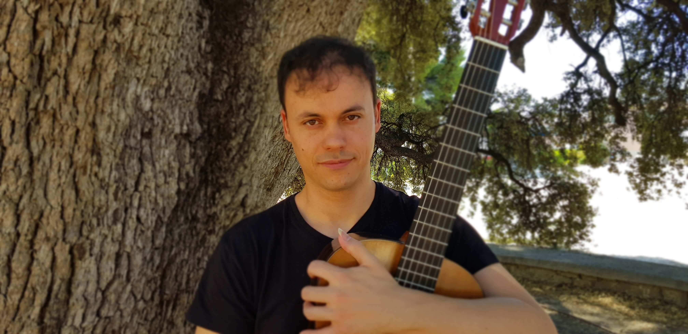

BIENVENIDO
 Español
English

Primer premio en el V Concurso Internacional de Guitarra Clásica Ángel G. Piñero 2018, Premio al mejor guitarrista español nacido en la comunidad valenciana en el LI Certamen Internacional Francisco Tárrega de Benicássim 2017, Segundo Premio en el XVII Concurso Internacional de Música de Benidorm 2015, y tras haber obtenido hasta la fecha más de 10 premios nacionales e internacionales…Jonathan Esteve Aranda se sitúa actualmente como uno de los guitarristas más destacados de su generación.
Demostrando en sus conciertos versatilidad, conocimiento y dominio de los diferentes periodos del repertorio, son cualidades que hacen de él un músico con gran personalidad acompañada de una amplia y consolidada técnica. Su guitarra, ha sonado en países Europeos como Francia, España, Reino Unido… presentándose en capitales cómo Lóndres o Madrid entre otras. Ha tocado en importantes salas cómo: Fundación Carlos de Amberes en Madrid, ADDA Concert Hall de Alicante, Palacio de ferias y congresos de Málaga, Teatro Pedro Muñoz Seca, Auditorio Andrés Gaos, Teatro Concha Segura, St Olave Hart Street (Londres-Inglaterra) Auditorio Maurice Ravel (Francia)…
Destacan sus conciertos con orquesta sinfónica, teniendo lugar el primero de ellos en el año 2015, donde interpretó con gran éxito el concierto de Aranjuez de Joaquín Rodrigo. Ha trabajado y compartido escenario con directores de renombre mundial como José Luis Granados, Rafael Vilaplana o Salvador Brotons.
Frecuentemente, es invitado como concertista y profesor en importantes citas internacionales: Guitar Fair de Málaga 2014, XXVIII Curso Internacional de Música de Benidorm, Festival internacional andaluz de Saint-Jean de Luz (Francia). Su iniciativa para organizar eventos relacionados con el mundo de la guitarra, le llevan a crear el certamen de guitarra clásica “Ciudad de Castalla” del cual es director.
Jonathan Esteve nace en Castalla (Alicante-España). Formado con los maestros Francisco Albert, Victor Bravo y Antonio Clavel en los conservatorios de Villena y Oscar Esplá en Alicante, completa los estudios superiores en guitarra con Matrícula de Honor. Paralelamente complementa su formación con guitarristas cómo Carles Trepat y Carlos Bonell.
 




En su página de Facebook podrás encontrar información a cerca de sus nuevos conciertos y otros datos de interés.